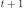
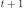
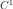
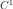
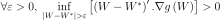
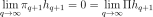
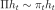
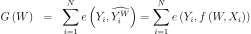

Descente de gradient¶
Lorsqu’un problème d’optimisation n’est pas soluble de manière déterministe, il existe des algorithmes permettant de trouver une solution approchée à condition toutefois que la fonction à maximiser ou minimiser soit dérivable, ce qui est le cas des réseaux de neurones. Plusieurs variantes seront proposées regroupées sous le terme de descente de gradient. Quelques lectures :
Algorithme et convergence¶
Soit  une fonction dérivable dont il faut trouver
,
le schéma suivant illustre la méthode de descente de gradient
dans le cas où
une fonction dérivable dont il faut trouver
,
le schéma suivant illustre la méthode de descente de gradient
dans le cas où  .
.
On note l’abscisse à l’itération  .
On note le
gradient de .
L’abscisse à l’itération  sera
.
est le pas de gradient à l’itération .
.
On note le
gradient de .
L’abscisse à l’itération  sera
.
est le pas de gradient à l’itération .
On suppose maintenant que  est une fonction dérivable
est une fonction dérivable
 dont il faut trouver le minimum, le théorème suivant démontre
la convergence de l’algorithme de descente de gradient à condition
que certaines hypothèses soient vérifiées. Une généralisation de ce théorème est présentée dans
[Driancourt1996].
dont il faut trouver le minimum, le théorème suivant démontre
la convergence de l’algorithme de descente de gradient à condition
que certaines hypothèses soient vérifiées. Une généralisation de ce théorème est présentée dans
[Driancourt1996].
Théorème T1 : convergence de la méthode de Newton
Soit une fonction continue  de classe .
On suppose les hypothèses suivantes vérifiées :
de classe .
On suppose les hypothèses suivantes vérifiées :
H1 :
 est un singleton
est un singletonH2 : 
H3 :
 tels que
tels que 
H4 : la suite vérifie, et ,

Alors la suite  construite de la manière suivante
construite de la manière suivante
 ,
,  :
:
 vérifie
vérifie  .
.
L’hypothèse H1 implique que le minimum de la fonction
est unique et l’hypothèse H2 implique que le demi-espace défini par
l’opposé du gradient contienne toujours le minimum de la fonction .
L’hypothèse H3 est vérifiée pour une fonction sigmoïde, elle l’est donc aussi pour toute somme finie
de fonctions sigmoïdes que sont les réseaux de neurones à une couche cachée.
Démonstration du théorème
Partie 1
Soit la suite avec , comme , on a .
Par conséquent, si alors .
Partie 2
On pose  .
Donc :
.
Donc :
(1)¶
Par conséquent :
D’où :
On pose alors en multipliant des deux côtés par , on obtient :
Comme la série vérifie le critère de Cauchy, elle est convergente. Par conséquent :

D’où .
Partie 3
La série est convergente car . l’est aussi (d’après H3).
D’après (1), la série est donc convergente. Or d’après les hypothèses H2, H4, elle ne peut l’être que si :
Si ce théorème prouve la convergence de la méthode de Newton, il ne précise pas à quelle vitesse cette convergence s’effectue et celle-ci peut parfois être très lente. Plusieurs variantes ont été développées regroupées sous le terme de méthodes de quasi-Newton dans le but d’améliorer la vitesse de convergence.
Ce théorème peut être étendu dans le cas où la fonction
n’a plus un seul minimum global mais plusieurs minima locaux ([Bottou1991]),
dans ce cas, la suite converge vers un mimimum local.
Dans le cas des réseaux de neurones, la fonction à optimiser est :
(2)¶
Dès que les fonctions de transfert ne sont pas linéaires, il existe une multitude de minima locaux, ce nombre croissant avec celui des coefficients.
Calcul du gradient ou rétropropagation¶
Afin de minimiser la fonction  décrite en (2),
l’algorithme de descente du gradient nécessite de calculer le gradient de
cette fonction qui est la somme des gradients
pour chaque couple
décrite en (2),
l’algorithme de descente du gradient nécessite de calculer le gradient de
cette fonction qui est la somme des gradients
pour chaque couple  :
:
(3)¶
Les notations utilisées sont celles de la figure du perceptron. Les résultats qui suivent sont pour donné appartenant à la suite . On remarque tout d’abord que :
(4)¶
La rétropropagation du gradient consiste donc à calculer les termes : puisque le gradient s’en déduit facilement. La dernière couche du réseau de neurones nous permet d’obtenir :
(5)¶
Pour les autres couches  telles que , on a :
telles que , on a :
(6)¶
Par conséquent :
(7)¶
Cette dernière formule permet d’obtenir par récurrence les dérivées
de la dernière couche  à la première et ce,
quel que soit le nombre de couches. Cette récurrence inverse de la propagation est appelée rétropropagation.
Cet algorithme se déduit des équations (3), (4), (5) et (7) :
à la première et ce,
quel que soit le nombre de couches. Cette récurrence inverse de la propagation est appelée rétropropagation.
Cet algorithme se déduit des équations (3), (4), (5) et (7) :
Théorème T2 : rétropropagation
Cet algorithme s’applique à un réseau de neurones vérifiant la définition du perceptron.
Il s’agit de calculer sa dérivée par rapport aux poids. Il se déduit des formules
(3), (4), (5) et (7)
et suppose que l’algorithme de propagation a été préalablement exécuté.
On note  , et
.
, et
.
Initialisation

Récurrence

Terminaison


Ces formules sont assez indigestes pour comprendre comment la rétropropagation fonctionne. La figure suivante illustre comme le gradient se propage d’un neurone au précédente de façon récursive. Je la trouve plus simple à exploiter lorsqu’on dévie du perceptron classique pour faire des choses hors des clous. Je la laisse comme ça sans trop d’explications.
L’idée de la rétropropagation : en supposant connu le gradient de l’erreur par rapport à la sortie, comment en déduir le gradient par rapport aux coefficients du réseau puis comment le propager à chaque entrée de sorte qu’il puisse être transmis aux neurones de la couche inférieure.